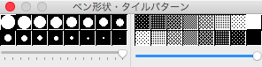
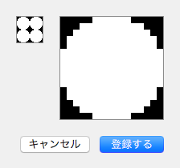
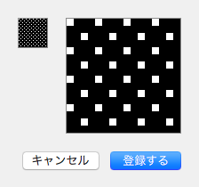
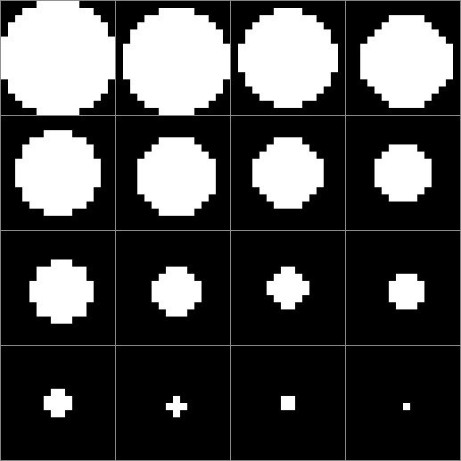
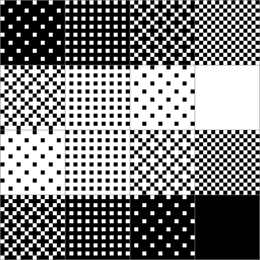

ペン形状・タイルパターンウィンドウ
このウィンドウは描画時のペン先やタイルパターンの選択や編集を行います。

ペン形状の登録
形状を編集したいパターンでダブルクリックすると、パターン作成シートが開きます。
ペン形状のパターンはモノクロ（２値）パターンです。

なお、ペン形状は本ツールで共通です（ドキュメントごとにペン形状を登録することはできません）。
また、登録数は１６個です。
タイルパターンの登録
編集したいパターンでダブルクリックすると、パターン作成シートが開きます。
タイルパターンはモノクロ（２値）パターンです。

なお、タイルパターンは本ツールで共通です（ドキュメントごとにタイルパターンを登録することはできません）。
また、登録数は１６個です。
筆圧比例
筆圧比例の場合に最大太さと最大濃度はそれぞれスライダーの指定に従います。
太さは１から１６まで設定できます。
濃度は０％から１００％まで設定できます。
ペン形状・タイルパターンの初期値
ペン形状の初期値は次のとおりです（見やすくするために大きくしています）。

タイルパターンの初期値は次のとおりです（見やすくするために大きくしています）。

なお、筆圧比例で描画する場合や、濃さが順々と変化する描画を行う場合は、先に登録したパターンは使用せず、これらの初期値を使用します。